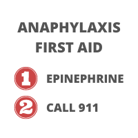

FIRST AID:
Yes, you call 911 SECOND. This is different than treatment for other emergencies. In the case of anaphylaxis, there is literally no time to waste.



1) Locate and give epinephrine FIRST
2) THEN call 911
3) Call family/friends/emergency contacts
OTHER (optional):
- If you think of it, make a note of when exactly you started noticing symptoms. The paramedics often ask about this when they arrive. They also may ask what caused the reaction, so make a note of what food was eaten. Keep in mind, this information isn’t necessary for treatment so it’s okay if you don’t think to keep track, but it can be useful information to have.
- AFTER they are safe, maybe grab some comfy clothes, a blanket, a book, a charger… and anything you think your person with food allergies might like to have while they wait (potentially) 4 hours being monitored at the hospital. Trust me, it’s boring (still go though lol).
- At the hospital - you may have to fight the doctors on this one, but in my experience it’s worth it. Recently for my last few reactions the ER doctors not only have stopped requiring a 4 hour stay to monitor for a rebound reaction, but they’ve encouraged me to leave if I’m feeling fine. I strongly suggest you advocate for staying the whole 4 hours, because it is much better to find yourself having a rebound reaction in the ER rather than having to repeat the three steps above and go through it all over again.

About Me
I'm Samantha (Sammie) Atkins, creator of Your Last Meal. I have life-threatening food allergies to eggs, peanuts, and treenuts. I'm 21 years old, and I've had a lot of experience with allergic reactions, handling social situations with food allergies, adjusting to college, advocating for myself, etc. I created Your Last Meal as a food allergy awareness site where I could share my tips & tricks and personal stories regarding my experiences as a person with life-threatening food allergies.
The name for this site, Your Last Meal, is meant to be a dramatic, yet comical reminder for me and all people with life-threatening food allergies that if we're not careful, any meal could be our last. Hopefully the content on this webiste can help you, or give the people you love ideas on how to help you, in your efforts to stay safe.